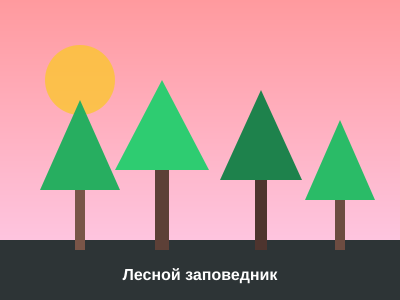
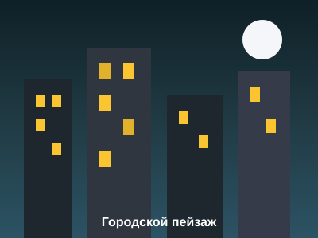

Горные вершины

Величественная горная гряда со скалистыми склонами и заснеженными вершинами возвышается над облаками. Чистый горный воздух и безмолвие вершин притягивают исследователей и путешественников со всего мира.
← Главная страница | Задание 2 →

Густой хвойный лес раскинулся вдоль берега горного озера. Утренний туман медленно поднимается над зеркальной гладью воды, окутывая верхушки вековых сосен и елей. В этом первозданном уголке природы царит первозданная тишина и гармония, нарушаемая лишь легким шелестом хвои от свежего утреннего ветра и редким пением лесных птиц. Солнечные лучи пробиваются сквозь густые ветви, озаряя изумрудный мох и прозрачную росу на лесных тропах.

Вечерний город встречает закат яркими красками огней и динамичным движением. Высотные здания из стекла и бетона устремляются ввысь, отражая теплые оранжевые и золотистые оттенки заходящего солнца. Город наполнен энергией созидания: широкие транспортные артерии связывают между собой деловые кварталы, набережные и исторические районы. С наступлением сумерек на улицах зажигаются фонари, создавая неповторимую атмосферу ночной жизни большого города.
Величественная горная гряда со скалистыми склонами и заснеженными вершинами возвышается над облаками. Чистый горный воздух и безмолвие вершин притягивают исследователей и путешественников со всего мира.
Выполнил: студент гр. 209 БЗУ Баянов Дияз | Факультет ИИМРТ, Кафедра АСУ